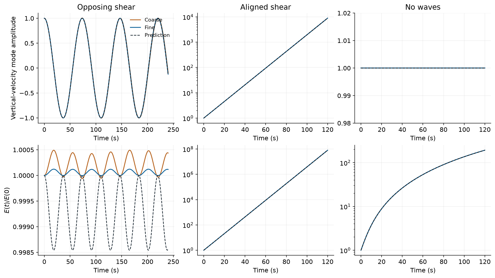
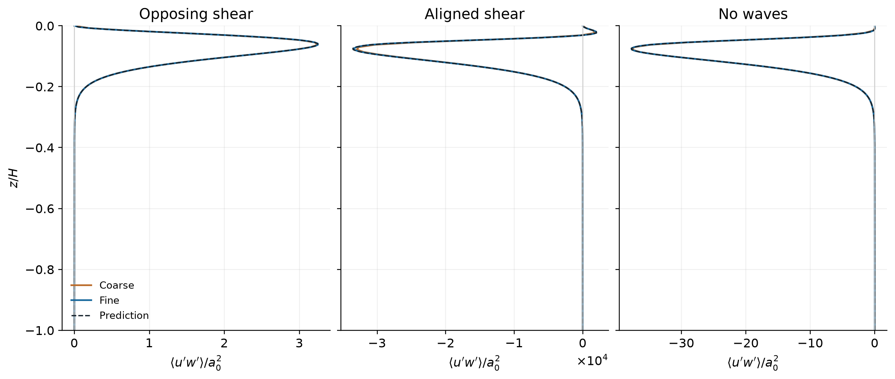
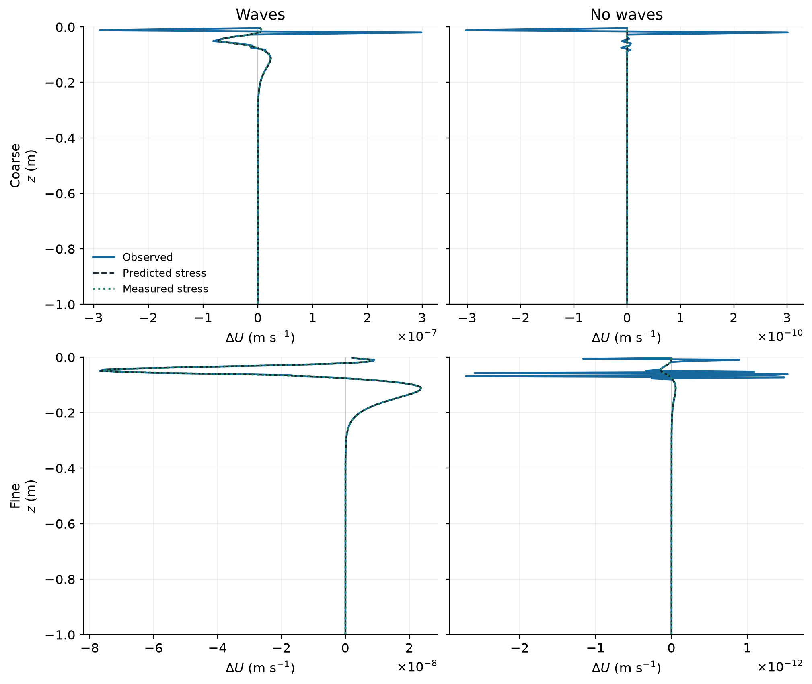
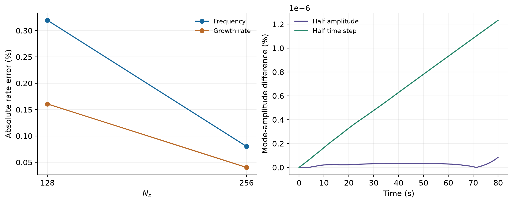

Completed deterministic modal tests · eight cases · deep-water exponential Stokes profile
Deep-water CL2: stable and unstable branches
This experiment compares the numerical solver with independent predictions for transverse rolls about prescribed parallel currents. It tests the sign of the CL2 feedback, oscillation or growth rates, and the momentum flux carried by the modes.
All eight cases reached their specified final times. Their measured errors and signed stresses are reported below; completion alone is not treated as a scientific pass.
Why the branches differ
Write UL = UE + us, S = ∂zus, and Vz = ∂zUE. For a transverse roll, the linearized along-wave anomaly obeys ∂tu′ = −Vzw′; the vertical force contains −Su′. Eliminating pressure gives the independent variable-depth eigenproblem
Opposing Eulerian and Stokes shears give a restoring response. Aligned shears can give classical CL2 exponential growth. The prescribed wave is deep water in both wave-on branches: us = 0.03125 exp(8z) m s⁻¹, with decay depth 0.125 m and surface-wave k = 4 m⁻¹. No constant-gradient wave profile substitutes for it.
- Opposing shear: UL = 0, hence UE = −us. The initial standing mode is predicted to oscillate.
- Aligned interior shear: ∂zUL = 2Sg(z), with zero depth-mean UL. The gate g is one in the interior and decreases to zero through sin-squared ramps of thickness H/16 at each wall. The independent eigenproblem includes those stable wall layers.
- No-wave operator control: the same Lagrangian base and initial perturbation as the aligned case, with the Stokes force removed. Vertical velocity remains constant to linear order while the along-wave anomaly grows algebraically. This control does not match the Eulerian base state of the wave-on case.
The rotating-shear connection is discussed by Teixeira (2011). Opposing-shear suppression in a different, convectively forced setting is studied by Li (2026). Those results motivate these tests, rather than replacing numerical verification.
Mode trajectories against independent predictions

On the refined grid, the fitted opposing-shear angular frequency is 0.08558736 s⁻¹, compared with 0.08565599 s⁻¹ from the independent eigenproblem; the relative difference is -0.0801%. The aligned velocity growth fit gives 0.0758212 s⁻¹ (-0.0391% relative error) over 20–60 s and 0.0758203 s⁻¹ (-0.0403% relative error) over 40–80 s. Fits are diagnostic estimates; the dashed trajectories are not adjusted to those fits.
Momentum flux: sign, profile and amplitude

| Case | Grid | Measured frequency / growth / no-wave drift | Energy trajectory error | Minimum signed stress correlation | Maximum wrong-sign depth fraction | Maximum base drift / perturbation RMS |
|---|---|---|---|---|---|---|
| stable-coarse | 16 × 64 × 128 | ω = 0.0854253 s⁻¹ | 0.388% | -0.9962 | 100% | 2.08e-05% |
| aligned-coarse | 16 × 64 × 128 | 0.0757609 s⁻¹ (-0.161% relative error) | 2.96% | 1 | 0% | 0.436% |
| aligned-nowave-coarse | 16 × 64 × 128 | max |w/w₀ − 1| = 1e-11 | 0.0655% | 1 | 0% | 0.272% |
| stable-fine | 16 × 128 × 256 | ω = 0.0855874 s⁻¹ | 0.0972% | 0.99806 | 0% | 2.08e-05% |
| aligned-fine | 16 × 128 × 256 | 0.0758203 s⁻¹ (-0.0403% relative error) | 0.75% | 1 | 0% | 0.138% |
| aligned-nowave-fine | 16 × 128 × 256 | max |w/w₀ − 1| = 0 | 0.0156% | 1 | 0% | 0.00221% |
| aligned-fine-halfamp | 16 × 128 × 256 | 0.0758203 s⁻¹ (-0.0403% relative error) | 0.75% | 1 | 0% | 0.0691% |
| aligned-fine-halfdt | 16 × 128 × 256 | 0.0758203 s⁻¹ (-0.0403% relative error) | 0.75% | 1 | 0% | 0.138% |
Energy errors are time-RMS differences from the independent trajectory, normalized by its time-RMS magnitude. Signed-stress metrics in this table use 20–80 s for aligned/no-wave cases; stable phases with predicted stress below 5% of its maximum are excluded from relative profile statistics. The wrong-sign fraction counts depths where the reference exceeds 5% of that profile’s peak magnitude. All definitions and full error values are included in the assessment.
Stable-phase check without a masking threshold: over the full 0–240 s interval, the signed stress space–time L² error is 7.63% on the coarse grid and 1.91% on the refined grid. Small frequency errors can reverse instantaneous stress near a zero crossing; the independent review lists every negative-correlation sample without discarding these phases. The refined total perturbation energy departs from its initial value by at most 0.01222% (less than 0.0123%). A fitted envelope of one velocity-mode projection is not a measurement of total-energy damping.
The perturbation diagnostics subtract the evolving horizontal mean, so their errors alone can hide a changing base current. The last column separately reports the largest RMS change of that mean from its initial base, divided by the instantaneous perturbation velocity RMS. Absolute base drift is retained in base-drift.csv.
Does the momentum flux explain the mean-current change?
For these x-independent modes, the physical momentum-flux prediction is
We compare the signed final-minus-initial horizontal mean with two predictions: the independent linear-mode stress integrated analytically in time, and the measured physical stress integrated from the saved 0.5 s samples. Neither profile is shifted or rescaled to fit the observed response.

| Case | Observed ΔU RMS (m s⁻¹) | Predicted ΔU RMS (m s⁻¹) | Signed profile L² error | Signed correlation |
|---|---|---|---|---|
| aligned-coarse | 3.87e-08 | 1.222e-08 | 303.5% | 0.28778 |
| aligned-fine | 1.234e-08 | 1.236e-08 | 2.97% | 0.99956 |
| aligned-nowave-coarse | 3.776e-11 | 2.503e-14 | 1.509e+05% | -0.041329 |
| aligned-nowave-fine | 3.062e-13 | 2.533e-14 | 1205% | 0.086733 |
Early mean drift fails the expected amplitude scaling. At 20 and 40 s, halving the aligned perturbation amplitude reduces the observed mean drift by about one half, while a quadratic physical momentum-flux response should fall to one quarter. After division by the squared initial amplitude, the mean-drift time-series L² difference over 0–80 s is 43.3%, despite the much closer modal-amplitude and stress comparisons. This identifies a linear-amplitude contribution contaminating the early mean response. Its precise numerical origin is not established by these comparisons; halving the time step barely changes it.
Late refined agreement is more limited than a full momentum-budget validation. At 120 s, the aligned-wave signed mean-profile error against the independent prediction is 2.97% on the refined grid, versus 303% on the coarse grid. The half-amplitude raw mean-drift ratio is then about 0.2503, consistent with quadratic scaling after the growing mode becomes larger. The tiny no-wave mean response remains unresolved on both grids: even the refined observed RMS is about 12.1 times its predicted value and its signed correlation is only 0.087. Accurate no-wave stress alone does not validate its mean-current response.
Resolution, amplitude and time-step checks

| Comparison with aligned-fine, 0–80 s | Normalized mode difference | Normalized energy difference | Normalized stress-norm difference | Quadratic-normalized mean-drift difference |
|---|---|---|---|---|
| aligned-fine-halfamp | 4.37e-08% | 3.63e-07% | 4.49e-07% | 43.3% |
| aligned-fine-halfdt | 1.14e-06% | 2.37e-06% | 2.37e-06% | 4.21e-05% |
The grids are 16 × 64 × 128 and 16 × 128 × 256 in a 1 × 0.5 × 1 m box. The flow is initialized independent of x, but all three velocity components are integrated by the three-dimensional solver. Oceananigans 0.107.0 uses Float64, WENO9 advection and RK3. Vertical boundaries are impermeable and free slip for the prognostic Lagrangian velocity. The independent inviscid eigenproblem imposes normal impermeability; tangential ghost treatment and pressure discretization are possible sources of finite-grid discrepancies.
Derived data and provenance
- Full numerical assessment
- All eight derived time series
- Fitted velocity and stress rates
- Signed stress profiles shown above
- Base-current drift
- Independent signed-stress and mean-response audit: JSON · plain text
- Mean-response RMS time series · signed final mean profiles for all eight cases
- Simulation specification
- Artifact checksums
All eight completion records match the approved source/input bundle e42c92cc329d88d3961e8a43772cb8b6770b8683af9ec263299ca16b1ffc95fd. This page contains reduced diagnostic data; it does not redistribute full three-dimensional fields.